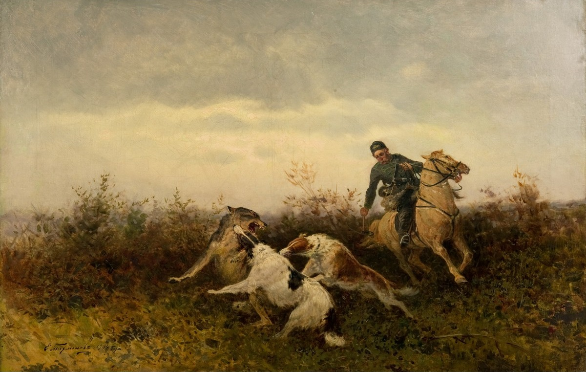

Spatial and Temporal Synchronization

In classical narratology, spatial and temporal synchronization is the synchronization of external events (and the external temporal and spatial frame) with the development of the character. In Leo Tolstoy’s Anna Karenina, however, this device is sometimes intensified by the fact that multiple characters converge at a single point in space and time. An example would be when in Chapter 12 of Part Three, after Levin makes eye contact with Kitty on the moving carriage, he has the epiphany about his mission and fate. Tolstoy pairs this device with its inverse, asynchronization, where misaligned space and time lead to missed connections and disorientation. Together, these opposing structures function as both a formal and a moral vehicle, where synchronization unites characters emotionally and spiritually, while asynchronization isolates and estranges them. What makes this device so powerful is that synchronization is not an episode the characters engineer for themselves, but something imposed upon them, which makes these encounters feel at once inevitable and accidental. The train station scene in Chapter 18 of Part I offers the most compressed and legible form of this device and provides a foundation for understanding how Tolstoy expands it across the novel.
Tolstoy condenses several otherwise independent events into this single moment — Anna’s meeting with Stiva, Stiva’s meeting with Vronsky, Vronsky greeting his mother, then encountering Anna for the first time, and the death of a railway watchman crushed beneath a train. None of these events causes the others, yet their simultaneity compels readers to perceive them as interconnected. From this synchronization follows Vronsky’s immediate admiration and pursuit of Anna and her own inexplicable attraction to him. On the other hand, the watchman’s death, placed spatially and temporally at the moment where Anna’s liaison with Vronsky begins, functions as a structural foreshadowing for their relationship — a connection Anna herself vaguely senses when she apprehends, “it’s a bad omen” (Tolstoy 68). When Anna commits suicide beneath a train in the end of the novel, the narrative device completes itself, symmetrically echoing their first meeting and bringing their relationship to its close. While the train station demonstrates synchronization at the level of a single moment, Tolstoy extends a comparable mechanism across larger spatial units by structuring meaning through the comparison of Pokrovskoye and Vozdvizhenskoye in Part VI. Neither estate gathering, taken in isolation, constitutes spatiotemporal synchronization in the strict sense, since no single character undergoes a decisive transformation within the confines of either visit. Instead, synchronization emerges through Dolly’s movement between the two spaces, as her experience at Pokrovskoye conditions her perception of Vozdvizhenskoye and ultimately leads to her rejection of Anna’s way of life. At Pokrovskoye, Dolly encounters a form of life organized around rhythms that feels both organic and communal: agricultural labor, domestic routines, and conversations about marriage collectively situate individuals within a shared moral and temporal framework (Tolstoy 553–56). Activities such as jam-making, mushroom picking, and sewing reinforce a sense that time unfolds productively and meaningfully, embedding personal relationships within cycles of labor and care (Knapp 29). This environment establishes a normative baseline for Dolly through lived familiarity. The estate’s underlying values — stability, family cohesion, and alignment with nature — become experientially legible to her, shaping her expectations of what a country estate ought to provide. In the meantime, Tolstoy also introduces a counterexample in Veslovsky, whose attempt to behave with carefree spontaneity instead exposes the boundaries of this moral order. His conduct during the hunt and his generally intrusive sociability reflects him as out of step with the estate’s customs, and Levin’s decision to expel him underscores that Pokrovskoye’s harmony depends on a shared attunement that cannot be violated. Veslovsky’s asynchronization thus clarifies, by contrast, the coherence of the world Dolly comes to recognize as normative. When Dolly arrives at Vozdvizhenskoye, she encounters a superficially similar social arrangement — an estate populated by guests, structured leisure, and cultivated refinement — but one that fails to reproduce the moral and temporal coherence of Pokrovskoye. What initially appears as elegance and sophistication comes to register, from her perspective, as disjunction: flirtation replaces courtship, leisure detaches from labor, and social interactions lack clear ethical grounding. Veslovsky’s presence here further sharpens the contrast. While his behavior at Pokrovskoye singles him out as out of place, at Vozdvizhenskoye the same tendencies are accepted and even encouraged, as seen in his flirtation with Anna, which Vronsky dismisses as inconsequential. What was once recognizable as misalignment now appears symptomatic of the estate’s broader moral looseness. Similarly, the “unnaturalness of grown-up people playing a children’s game alone without children” signals a deeper temporal dislocation, where activities no longer correspond to meaningful stages of life (Tolstoy 634). Dolly’s growing discomfort culminates in her sense that life at Vozdvizhenskoye resembles “acting in a theater,” a perception that directly contrasts with the pragmatic, rustic naturalness she experienced at Pokrovskoye (Tolstoy 637). Her rejection of Anna’s world, then, does not arise within a single moment but through the cumulative effect of this juxtaposition. In this way, Tolstoy relocates synchronization from a discrete event to a relational structure spanning multiple spaces through the juxtaposition of Pokrovskoye and Vozdvizhenskoye, enabling Dolly to undergo a moral clarification and aligning herself with one mode of life and spurning the other. This contrast clarifies the function of asynchronization, which emerges when a character occupies a space whose temporal and social logic no longer accommodates them. Vronsky’s late arrival at Petersburg’s opera in Chapter 33 of Part V illustrates this function. Arriving late and mid-performance, he is already out of step with the event’s temporal order. As he enters the auditorium, his gaze darts uncertainly across the hall, moving from Serpuhovskoy before finally seeking out Anna and Karenin, registering his own disorientation in a social world he has been absent from during his time in the countryside. He is present in the space but cannot locate himself within it (Tolstoy 548-49). His asynchronization culminates when he — like the rest of the theater audience witnessing Anna’s humiliation — finally notices her distress from afar, where her composure strained into a kind of performance (Tolstoy 550). In the aftermath, Anna blames him for everything and even accuses him of not loving her, marking a further cooling of their relationship. This shift suggests that asynchronization isolates characters by accelerating their emotional and moral disintegration. Moments of synchronizations, such as the first scene in the train station, unite the characters and deepen their connections. In contrast, asynchronization distances them and forebodes greater uncertainty and tension ahead of them. The late delivery of Anna’s letter after the election of the Provincial Marshal and the telegram she sends on her last day both contribute to and signal the fatalistic end of their relationship. Together, the two devices form a pair of moral and structural devices, where synchronization fosters connections and asynchronization leads to stasis, isolation, and loss.
Works Cited
- Knapp, Liza, and Amy Mandelker. Approaches to Teaching Tolstoy's Anna Karenina. Modern Language Association of America, 2003.